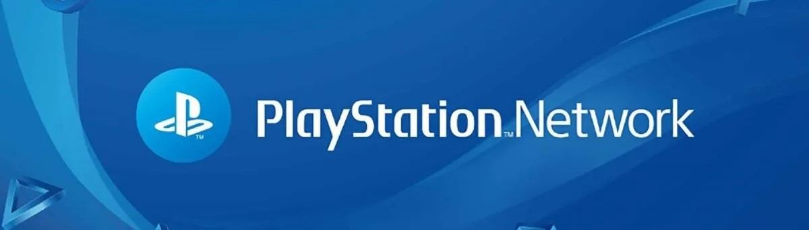

The PlayStation 4 is the fourth home video game console produced by Sony as part of the PlayStation series. It succeeded the PlayStation 3 and competes with other eighth-generation gaming consoles like the Xbox One and Nintendo Switch. The PS4 is known for its powerful hardware, diverse game library, and multimedia capabilities.
The PS4 features a custom-designed accelerated processing unit (APU) developed by AMD, combining a central processing unit (CPU) and a graphics processing unit (GPU) on a single chip.

It comes with 8 gigabytes of GDDR5 unified system memory, providing fast access for both the CPU and GPU.
The PlayStation 4 controller, commonly known as the DualShock 4, stands as a pivotal element in the gaming experience on Sony's fourth-generation console. This ergonomically designed controller seamlessly integrates form and function, offering players a comfortable and intuitive interface for navigating the virtual worlds of their favorite games.
The PS4 has a vast library of games spanning various genres, including action, adventure, sports, and more. Popular exclusive titles include "The Last of Us Part II," "God of War," and "Spider-Man."
PlayStation Network (PSN) allows users to access online multiplayer, download games, and enjoy other online services. PlayStation Plus is a subscription service offering free monthly games and exclusive discounts.
In addition to gaming, the PS4 serves as a multimedia entertainment center, supporting streaming services like Netflix, Hulu, and YouTube. Users can also play Blu-ray and DVD discs.

The PS4 allows players to capture and share screenshots and videos of their gameplay. There is also a dedicated "Share" button on the controller for quick sharing.
Users can stream games from their PS4 to other devices, such as a PlayStation Vita handheld console or compatible smartphones, through the Remote Play feature.
The PlayStation 4 was released in 2013 and quickly became one of the best-selling gaming consoles of its generation. Its success contributed to Sony's dominance in the console market. While the PlayStation 5 has been released, the PS4 remains relevant, with ongoing support for new games and services.